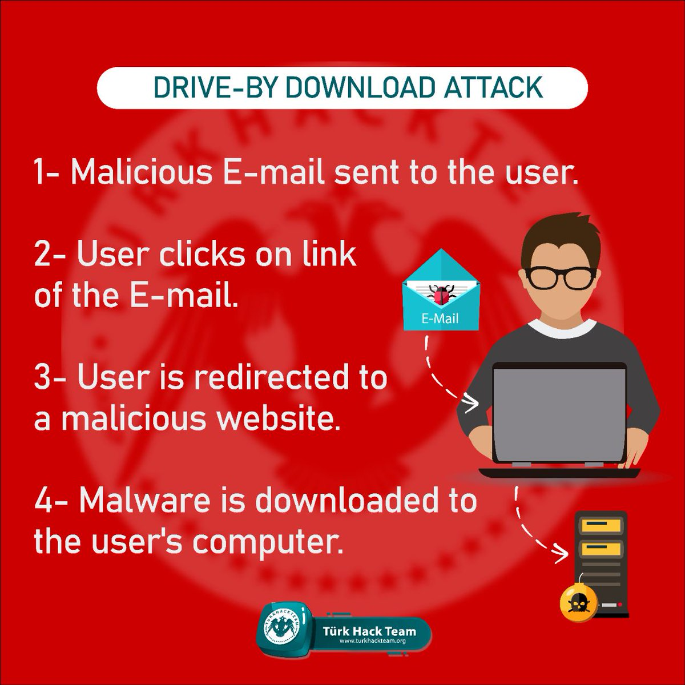
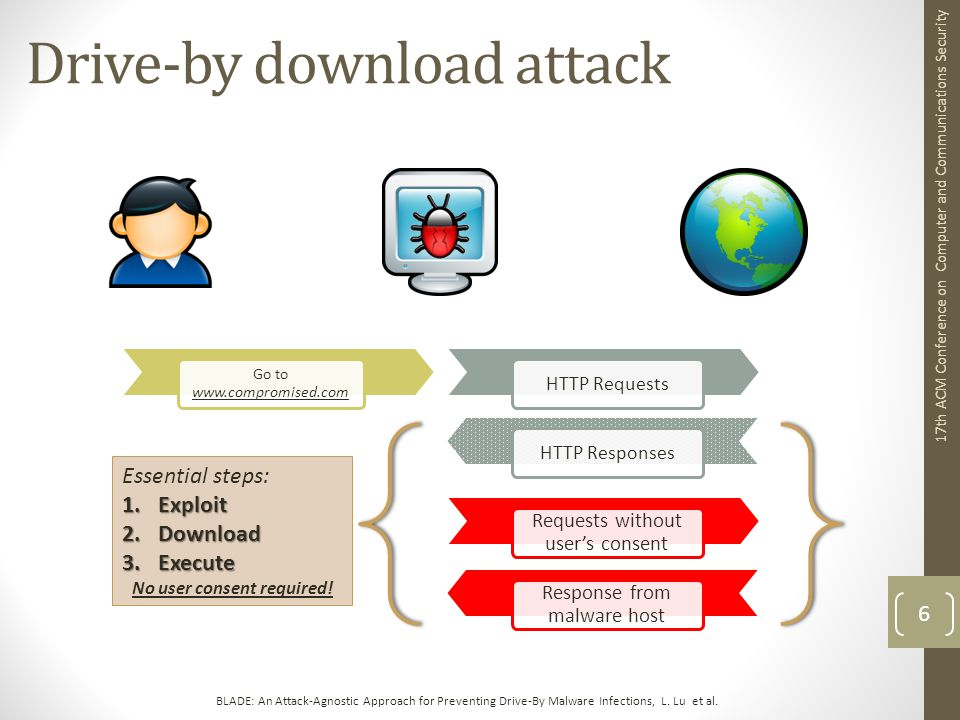

Drive-by attacks often use exploit kits to launch the automatic download. Exploit kits are malicious pieces of software, created by hackers to identify vulnerabilities in a device, web browser, or web-based app. These weaknesses are then used to launch the automatic download process and carry out the attack. Drive-by attacks are designed to infect devices, steal information, and/or cause damage to data.
Drive-by attack methods
Drive-by attacks are named as such because the download occurs silently, as they pass by, leaving users mystified as to how their devices was infected. There are two main methods through which drive-by downloads can infect a user device:
- Without authorization
- In these cases, there is no direct user action which causes the download to begin. In other words, the attack is launched when the user visits a compromised webpage, without the need for any interaction with the page, not even a single click.
- To create such an attack, the hacker injects malicious code into the web page by exploiting flaws in the website's security. When the user first visits the page, the code identifies any security vulnerabilities in either the user's web browser or the user's device, and triggers the malware download through these vulnerabilities.
- With authorization under false pretences
- Sometimes, there is a user action involved in a drive by download, but under false pretences. There are a few different ways this can be done, for example:
-
- A pop up advert could have an 'X' in the corner that disguises itself as a close button, but actually acts as a catalyst for starting a malicious download once pressed.
- A link could appear legitimate, but clicking on it could cause the download to begin.
- An email attachment which looks safe could actually be malicious, as part of a social engineering or phishing scheme, and clicking on it will launch the download.
All three examples involved a simple click or button press. These actions allow the attacker to claim that the user authorized the download, when in reality the user did not realize the implications of their actions, as the true intentions of the attacker were hidden. In this way, the hacker can get away with the download without being detected.

How can drive-by attacks be detected and prevented?
- Avoid suspicious websites
-
Of course, care should always be taken not to visit suspicious websites in the first place.Try and stick to browsing well-known sites with valid security certificates.
Many browsers will show security warnings when something isn't right with a web page. If a browser blocks access to a web page because it seems suspicious, or something is wrong with its security certificate, don't proceed without a really good reason.
- When in doubt, don't click
-
To avoid falling victim to a drive-by attack, it's important to verify that all links are legitimate before clicking on them. Pay particular attention to advertisements, and anything that promises some kind of reward, or encourages you to input valuable data. Look out for the common signs of suspicious content, such as low quality images, or spelling mistakes.
It's also possible to install an ad-blocker as a browser extension, which prevents advertisements from appearing altogether. This can avoid potential misclicks that could lead to a drive-by download attack. Just make sure that the ad-blocker is from a trustworthy source too.
- Only download software from legitimate sources
-
When you're downloading software, make sure the site you're downloading from is known, secure, and reputable. In addition, whenever installing software, make sure not to install any of the optional extra software ('bundleware') that comes with it, in case it contains malicious code.
A related recommendation is to delete any software on your device that you don't use, and anything that is no longer supported by the software vendor.
- Use a comprehensive, modern security strategy
-
It's crucial to have robust antivirus and firewall software solutions in place to detect threats such as malware. These traditional security solutions provide first-level protection for the user from malicious Internet content. However, because they use a signature-based approach, they can detect only known threats and are wholly ineffective against new variants and zero day threats.
Web isolation, leveraging remote browser isolation technology, operates under the Zero Trust assumption that any websites is likely to contain dangerous content. This more modern approach provides reliable protection against drive-by attacks by running all website code in a container that's isolated on a remote server or in the cloud. Only safe rendering data is sent to the endpoint, where users interact with the site as usual, on their regular browsers. No code ever reaches the endpoint, preventing drive by download attacks from succeeding.
A comprehensive security strategy leveraging modern cloud-based secure access service edge (SASE) platform, will combine antivirus, next-gen cloud firewalls and RBI in a comprehensive Zero Trust solution. Additional technologies included in these platforms, such as identity and access management (IAM) and microsegmentation can help minimize damage in the event that a drive-by or other attack manages to get past your defenses.
